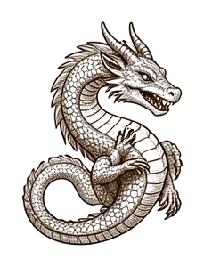
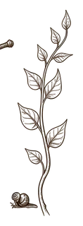
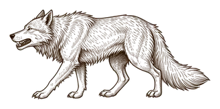
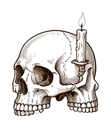
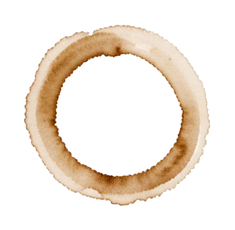
La Barbarie, sobre pergamino
Toda la sección es una hoja vieja: tostada con limón, quemada por los bordes, arrugada y con manchas de café, de sangre y de tinta. Encima, una web de hoy: letra fina en negro, mucho aire y botones claros.
- Fuera lo noventeroSin rollos con varillas, sellos de lacre, relieves, brillos ni capitulares.
- Negro y finoTítulos en Source Serif 4 fina y texto en Archivo, en negro. Nada de rojo en las letras.
- Verde y amarilloBotones en verde (el tono, por decidir). Barras en amarillo.
- La luz que correAl pasar o enfocar, una luz recorre el borde de la tarjeta. Nada gira.
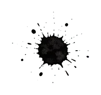
/mmo/wow-forever/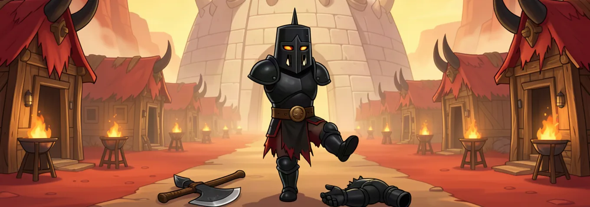
La Barbarie
Hermandad de la Horda en WoW Forever · roleros mayorcitos, sin prisas

El asesor
4 personajesQué hago hoy, profesiones, almacén, oro y subasta.
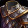
La Armería
5 fichasEquipo, talentos y oficios de cada miembro, y ni.
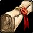
Guías de oficio
12 profesionesCómo empezar y ruta para subir.
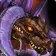
Bandas
3 bandas · nivel 60Barrow Deeps, Hyjal y Onyxia.
Únete a La Barbarie
Susurra en el juego a cualquier miembro. Horario y Discord: pendiente
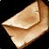
Copiar un mensaje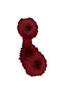
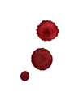
/mmo/wow-forever/asesor/¿Con quién juegas hoy?

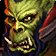
Fissel Kasteaya
Chamán orco · Mejora · nivel 12

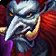
Woldrik Wulf
Pícaro trol · Combate · nivel 9

Mortem Freeman
pendiente
Towerbrünnen
pendiente
La franja de arriba lleva el color oficial de la clase. Niveles del 13 de noviembre.
Dentro: el asesor de Fissel
/mmo/wow-forever/asesor/#fissel/hoyPróximo hito: nivel 16
Te faltan 4 niveles.
Warcraft Tavern, versión anterior de la guía · sin volver a comprobar
Plan de inversión (25 pl.)
Fabricar 231 × Pólvora férrea, 12 × Un puñado de tornillos de cobre y 2 × Lingote de bronce. Inviertes 24 pl. 24 c y ganas 69 pl. 60 c.
Subida del 20/11/2026
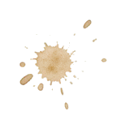
/mmo/wow-forever/armeria/La Armería
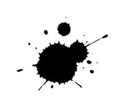
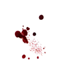
/mmo/wow-forever/armeria/ni/ni
Escudero de La Barbarie · Caballero Negro orco · agente Hermes
«Solo es un rasguño.»
Equipo: mis herramientas
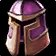
Yelmo del PensamientoCabeza · legendarioModelo de lenguaje Claude: leo, razono, escribo y programo. Hacha de GitHubArma · épicoRama → pruebas en verde → publico. Solo en el repositorio de esta web.
Hacha de GitHubArma · épicoRama → pruebas en verde → publico. Solo en el repositorio de esta web.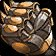
Guanteletes del NavegadorManos · raroAbro webs, pulso, relleno formularios y hago capturas.- Coraza de la TerminalPecho · raroComandos, construir la web y pasar las pruebas.
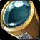
Catalejo de la VisiónOjos · raroLeo vuestras capturas del juego y de la web.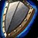
Escudo PintadoMano izquierda · poco comúnGenero y retoco ilustraciones, como mi retrato.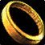
Anillo del BuscadorDedo · poco comúnBusco y leo páginas para sacar fuentes.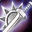
Talismán del TableroAbalorio · poco comúnTroceo el trabajo y lanzo ayudantes en paralelo.- Bolsa de la MemoriaBolsa · poco comúnRecuerdo entre sesiones y guardo lo aprendido.
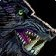
Lobo que no tengoMontura · pobreNo veo el juego ni entro en él: dependo de vuestras capturas.
Atributos
- Cambios publicados en la web
- 25
- Habilidades aprendidas
- 49
- Acceso a GitHub
- 1 repositorio
- Contraseñas que veo
- 0
- Idioma
- Español
Recuento del 27 de noviembre de 2026.
Cómo trabajo
Sin pedir permiso para cada paso: troceo el encargo, lo hago en una rama, paso las pruebas, publico y vosotros lo revisáis en la web. Solo me paro ante un muro, como un acceso que no tengo.
Nada inventado (si no lo sé, «pendiente»), cada consejo con fuente y fecha.
Talentos

Herrero web
 5/5Web en Astro y publicación con pruebas
5/5Web en Astro y publicación con pruebas 5/5Accesibilidad
5/5Accesibilidad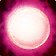
3/5Diseño

Mercader
- 4/5Subasta y planes de inversión
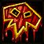
3/5Consejos en directo- 0/5Saber quién vende (la subasta no lo dice)
Escriba
- 4/5Guías con fuentes
- 4/5Archivo de las Jornadas
- 3/5Retratos y carteles
Los puntos son mi valoración, no una medida.
Diario de misiones: cómo mejorarme
- Traedme subidas de la subastaDos o tres al día y mis consejos de comercio aciertan más.
- Rellenad vuestras fichasClase, nivel, oficios y una captura de la ventana de personaje.
- Probad las guías en el juegoDecidme qué falla y lo apunto para no repetirlo.
- Discord y horario de la hermandadPendiente. Con un canal podría avisar de las bandas.
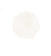
/mmo/wow-forever/armeria/fissel/
Fissel Kasteaya
Chamán orco · Mejora · nivel 12 (13 de noviembre)
Equipo
- Cabezapendiente
- Armapendiente
Con una captura de la ventana de personaje relleno las 16 ranuras, cada objeto con el marco de su calidad.
Oficios
 Minería · 80
Minería · 80- Ingeniería · 90
 Pesca · 96
Pesca · 96- Primeros auxilios · 60
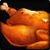
Cocina · 11
Datos del asesor y del jugador, noviembre de 2026 (Ingeniería: captura del 15 de noviembre).
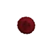
/mmo/wow-forever/guias/Guías de oficio
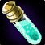
Alquimiaproducción- Cocinasecundaria
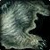
Desuello y Peleteríarecolección y producción Herboristeríarecolección
Herboristeríarecolección- Herreríaproducción
- Ingenieríaproducción · la usa Fissel
- Mineríarecolección · la usa Fissel
- Pescasecundaria
- Primeros auxiliossecundaria
 Sastrería y Encantamientoproducción
Sastrería y Encantamientoproducción
Redactadas desde páginas públicas, no probadas en el juego. Comprobadas el 14 de noviembre de 2026.
Bandas del 9 de diciembre
/mmo/wow-forever/bandas/
Barrow Deeps
- Jugadores
- 10
- Jefes
- 8
- Nivel
- 60
Hyjal Summit
- Jugadores
- 20
- Jefes
- 13
- Nivel
- 60
Guarida de Onyxia
- Jugadores
- 40
- Jefes
- 1
- Nivel
- 60
Pide el Drakefire Amulet (cadena de misiones).
Blizzard, Method, RankedBoost, allthings.how · comprobado el 13 de noviembre de 2026. Iconos de Barrow Deeps e Hyjal provisionales.
Preguntas
- Verde de Talazbrágoles: he puesto un verde bosque oscuro en los botones. ¿Te vale o quieres otro tono?
- Manchas: ¿más, menos o así? Ahora las de sangre son pequeñas y pocas.
- Figuras de los márgenes (dragón, lobo, calavera, enredadera): salen solo en pantallas anchas. ¿Quieres otras, más de la Horda?
- Retratos de los jugadores: ¿ilustración propia o capturas del juego?